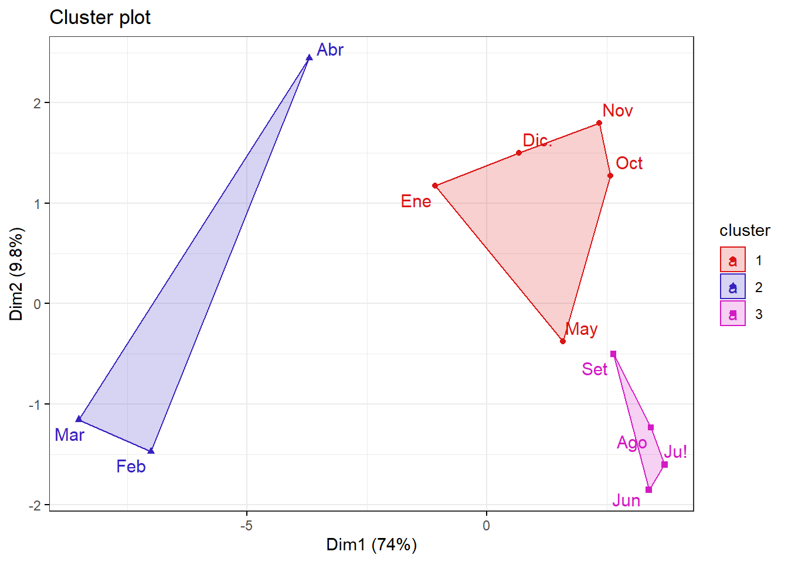

Chapter 2 podemos observar que los datos se encuentran en diferente escala por lo que estandarizaremos
#estructura
str(datosc)## tibble [12 x 25] (S3: tbl_df/tbl/data.frame)
## $ meses: chr [1:12] "Ene" "Feb" "Mar" "Abr" ...
## $ Caud : num [1:12] 40.6 56 71.9 47.6 26.3 23.1 23.5 21.7 22.8 22.4 ...
## $ Temp : num [1:12] 19.2 20.2 20.2 20.1 18.5 17.2 16.6 15.7 16.5 18.6 ...
## $ pH : num [1:12] 7.7 7.8 7 7 8 7 7.8 7 7 8 ...
## $ Turb : num [1:12] 47.2 301.9 391.7 100.4 12.5 ...
## $ CE : num [1:12] 488 440 402 426 595 ...
## $ OD : num [1:12] 8.7 8.84 8.94 8.51 8.55 8.64 9 8.76 8.7 8.64 ...
## $ SD : num [1:12] 338 308 278 284 380 ...
## $ Akal : num [1:12] 95.6 91 81.6 91.3 120.4 ...
## $ DI : num [1:12] 211 189 165 176 255 ...
## $ Cls : num [1:12] 14.3 12.8 12.8 11.9 21.8 24.8 18.8 19.3 19.9 17.8 ...
## $ so : num [1:12] 138.6 116.5 97.5 114.6 146.7 ...
## $ N03 : num [1:12] 2.98 2.78 2.54 2.41 3.38 3.64 3.83 3.58 3.61 3.38 ...
## $ N02 : num [1:12] 0.2 0.13 0.08 0.1 0.21 0.3 0.23 0.28 0.18 0.24 ...
## $ PO : num [1:12] 0.2 0.14 0.09 0.18 0.23 0.28 0.32 0.38 0.36 0.34 ...
## $ Cu : num [1:12] 0.04 0.065 0.077 0.038 0.03 0.027 0.022 0.025 0.028 0.023 ...
## $ Al : num [1:12] 1.707 7.207 10.89 3.644 0.408 ...
## $ Fe : num [1:12] 2.176 7.595 11.37 4.471 0.434 ...
## $ Mu : num [1:12] 0.118 0.324 0.342 0.173 0.111 0.089 0.074 0.064 0.049 0.045 ...
## $ Pb : num [1:12] 0.024 0.081 0.079 0.056 0.015 0.02 0.013 0.015 0.022 0.012 ...
## $ Cd : num [1:12] 0.002 0.005 0.003 0.002 0.003 0.002 0.002 0.002 0.002 0.001 ...
## $ Zn : num [1:12] 0.372 0.611 0.641 0.343 0.468 0.323 0.273 0.28 0.28 0.171 ...
## $ As : num [1:12] 0.029 0.126 0.088 0.074 0.024 0.023 0.022 0.019 0.022 0.022 ...
## $ Colo : num [1:12] 178600 247014 208035 174967 160299 ...
## $ Cole : num [1:12] 74326 95332 90325 58096 63802 ...datosc=as.data.frame(datosc)
rownames(datosc)<- datosc$meses
datosc## meses Caud Temp pH Turb CE OD SD Akal DI Cls so N03
## Ene Ene 40.6 19.2 7.7 47.2 487.71 8.70 337.86 95.6 211.4 14.3 138.6 2.98
## Feb Feb 56.0 20.2 7.8 301.9 440.00 8.84 307.96 91.0 189.1 12.8 116.5 2.78
## Mar Mar 71.9 20.2 7.0 391.7 401.96 8.94 278.04 81.6 164.6 12.8 97.5 2.54
## Abr Abr 47.6 20.1 7.0 100.4 426.39 8.51 284.46 91.3 176.0 11.9 114.6 2.41
## May May 26.3 18.5 8.0 12.5 595.00 8.55 379.64 120.4 254.8 21.8 146.7 3.38
## Jun Jun 23.1 17.2 7.0 11.1 652.68 8.64 468.32 120.5 284.2 24.8 160.9 3.64
## Ju! Ju! 23.5 16.6 7.8 11.1 624.14 9.00 436.21 121.1 273.4 18.8 164.6 3.83
## Ago Ago 21.7 15.7 7.0 13.0 605.14 8.76 432.36 113.3 260.1 19.3 161.8 3.58
## Set Set 22.8 16.5 7.0 12.2 578.86 8.70 426.11 110.0 241.8 19.9 150.7 3.61
## Oct Oct 22.4 18.6 8.0 10.8 575.79 8.64 405.96 107.3 246.4 17.8 150.9 3.38
## Nov Nov 26.6 17.8 8.0 53.0 574.04 8.51 395.36 105.6 229.0 16.9 151.1 3.41
## Dic. Dic. 32.2 18.4 8.0 28.6 539.68 8.70 373.00 104.0 237.7 15.3 149.5 3.02
## N02 PO Cu Al Fe Mu Pb Cd Zn As Colo Cole
## Ene 0.20 0.20 0.040 1.707 2.176 0.118 0.024 0.002 0.372 0.029 178600 74326
## Feb 0.13 0.14 0.065 7.207 7.595 0.324 0.081 0.005 0.611 0.126 247014 95332
## Mar 0.08 0.09 0.077 10.890 11.370 0.342 0.079 0.003 0.641 0.088 208035 90325
## Abr 0.10 0.18 0.038 3.644 4.471 0.173 0.056 0.002 0.343 0.074 174967 58096
## May 0.21 0.23 0.030 0.408 0.434 0.111 0.015 0.003 0.468 0.024 160299 63802
## Jun 0.30 0.28 0.027 0.531 0.744 0.089 0.020 0.002 0.323 0.023 172396 66132
## Ju! 0.23 0.32 0.022 0.499 0.580 0.074 0.013 0.002 0.273 0.022 109409 39528
## Ago 0.28 0.38 0.025 0.546 0.757 0.064 0.015 0.002 0.280 0.019 146956 51147
## Set 0.18 0.36 0.028 0.408 0.396 0.049 0.022 0.002 0.280 0.022 145296 47502
## Oct 0.24 0.34 0.023 0.413 0.398 0.045 0.012 0.001 0.171 0.022 173663 49568
## Nov 0.20 0.34 0.018 0.520 0.723 0.053 0.012 0.001 0.159 0.020 154525 57642
## Dic. 0.19 0.26 0.026 0.801 0.794 0.074 0.016 0.001 0.245 0.026 191987 85461str(datosc)## 'data.frame': 12 obs. of 25 variables:
## $ meses: chr "Ene" "Feb" "Mar" "Abr" ...
## $ Caud : num 40.6 56 71.9 47.6 26.3 23.1 23.5 21.7 22.8 22.4 ...
## $ Temp : num 19.2 20.2 20.2 20.1 18.5 17.2 16.6 15.7 16.5 18.6 ...
## $ pH : num 7.7 7.8 7 7 8 7 7.8 7 7 8 ...
## $ Turb : num 47.2 301.9 391.7 100.4 12.5 ...
## $ CE : num 488 440 402 426 595 ...
## $ OD : num 8.7 8.84 8.94 8.51 8.55 8.64 9 8.76 8.7 8.64 ...
## $ SD : num 338 308 278 284 380 ...
## $ Akal : num 95.6 91 81.6 91.3 120.4 ...
## $ DI : num 211 189 165 176 255 ...
## $ Cls : num 14.3 12.8 12.8 11.9 21.8 24.8 18.8 19.3 19.9 17.8 ...
## $ so : num 138.6 116.5 97.5 114.6 146.7 ...
## $ N03 : num 2.98 2.78 2.54 2.41 3.38 3.64 3.83 3.58 3.61 3.38 ...
## $ N02 : num 0.2 0.13 0.08 0.1 0.21 0.3 0.23 0.28 0.18 0.24 ...
## $ PO : num 0.2 0.14 0.09 0.18 0.23 0.28 0.32 0.38 0.36 0.34 ...
## $ Cu : num 0.04 0.065 0.077 0.038 0.03 0.027 0.022 0.025 0.028 0.023 ...
## $ Al : num 1.707 7.207 10.89 3.644 0.408 ...
## $ Fe : num 2.176 7.595 11.37 4.471 0.434 ...
## $ Mu : num 0.118 0.324 0.342 0.173 0.111 0.089 0.074 0.064 0.049 0.045 ...
## $ Pb : num 0.024 0.081 0.079 0.056 0.015 0.02 0.013 0.015 0.022 0.012 ...
## $ Cd : num 0.002 0.005 0.003 0.002 0.003 0.002 0.002 0.002 0.002 0.001 ...
## $ Zn : num 0.372 0.611 0.641 0.343 0.468 0.323 0.273 0.28 0.28 0.171 ...
## $ As : num 0.029 0.126 0.088 0.074 0.024 0.023 0.022 0.019 0.022 0.022 ...
## $ Colo : num 178600 247014 208035 174967 160299 ...
## $ Cole : num 74326 95332 90325 58096 63802 ...datosc$meses=NULL
#Si estandarizaMOS las obsertvaciones de las variables
#porque se encuentran en diferentes rangos. datosc <- as.data.frame(scale(datosc))##################################
#CLUSTER JERARQUICO AGLOMERATIVO:#
##################################
#-----------------------------------
#calculando la matriz de disimilaridad
#usando la distanicia euclidiana
d <- dist(datosc, method = "euclidean")
res.hc <- hclust(d, method = "ward.D2" ) #hclust(d, method = "ward.D2" ) str(res.hc)#en el "merge" , observamos la cantidad de etapas 1:20## List of 7
## $ merge : int [1:11, 1:2] -10 -8 -1 -6 -7 -5 -2 3 -4 5 ...
## $ height : num [1:11] 1.55 1.9 2.54 3.36 3.95 ...
## $ order : int [1:12] 4 2 3 7 6 8 9 1 12 5 ...
## $ labels : chr [1:12] "Ene" "Feb" "Mar" "Abr" ...
## $ method : chr "ward.D2"
## $ call : language hclust(d = d, method = "ward.D2")
## $ dist.method: chr "euclidean"
## - attr(*, "class")= chr "hclust"options(digits =10)
options(scipen = 999) res.hc$height#altura## [1] 1.554549272 1.904330866 2.540560547 3.359678627 3.950459527
## [6] 4.065524134 4.075132170 4.573464336 7.031689299 7.392951589
## [11] 18.178468840################################
#HALLANDO EL NUMERO DE CLUSTER:#
################################
library(ggplot2)
alturas <- data.frame(etapa=1:11,distancia=res.hc$height)#distancia=res.hc$height
alturas## etapa distancia
## 1 1 1.554549272
## 2 2 1.904330866
## 3 3 2.540560547
## 4 4 3.359678627
## 5 5 3.950459527
## 6 6 4.065524134
## 7 7 4.075132170
## 8 8 4.573464336
## 9 9 7.031689299
## 10 10 7.392951589
## 11 11 18.178468840ggplot(alturas) + aes(x=etapa,y=distancia) +
geom_point() + geom_line() +
scale_x_continuous(breaks=seq(1,15)) +
geom_vline(xintercept = 9,col="red",lty=2) +
theme_bw() 
# Dividir en 3 clusters
grp <- cutree(res.hc, k = 3)
grp ## Ene Feb Mar Abr May Jun Ju! Ago Set Oct Nov Dic.
## 1 2 2 2 1 3 3 3 3 1 1 1############
#DEDONGRAMA#
############
library(factoextra)## Welcome! Want to learn more? See two factoextra-related books at https://goo.gl/ve3WBafviz_dend(res.hc, k=3, cex = 0.5,
k_colors = rainbow(3), # Colores del arco iris
color_labels_by_k = TRUE,
rect=T)
#########################
#GRAFICA#ACP con CLUSTER#
#########################
library(factoextra)
fviz_cluster(list(data = datosc, cluster = grp),
palette =c("#DB1515", "#3722BF", "#D41AC4") ,
ellipse.type = "convex", # Concentration ellipse
repel = T, # Avoid label overplotting (slow)
show.clust.cent = FALSE, ggtheme = theme_bw())
# Junta el archivo de datos con la columna de cluster
datos.j <- cbind(datosc,grp)
str(datos.j)## 'data.frame': 12 obs. of 25 variables:
## $ Caud: num 0.372 1.32 2.299 0.803 -0.508 ...
## $ Temp: num 0.621 1.275 1.275 1.21 0.163 ...
## $ pH : num 0.37 0.581 -1.11 -1.11 1.004 ...
## $ Turb: num -0.279 1.717 2.421 0.138 -0.551 ...
## $ CE : num -0.652 -1.227 -1.686 -1.391 0.642 ...
## $ OD : num -0.0477 0.8426 1.4785 -1.2559 -1.0015 ...
## $ SD : num -0.6264 -1.1037 -1.5813 -1.4788 0.0404 ...
## $ Akal: num -0.734 -1.089 -1.812 -1.065 1.174 ...
## $ DI : num -0.506 -1.09 -1.732 -1.434 0.631 ...
## $ Cls : num -0.732 -1.111 -1.111 -1.339 1.162 ...
## $ so : num -0.158 -1.197 -2.091 -1.287 0.223 ...
## $ N03 : num -0.507 -0.942 -1.464 -1.747 0.362 ...
## $ N02 : num 0.0753 -0.9789 -1.7319 -1.4307 0.2259 ...
## $ PO : num -0.644 -1.289 -1.825 -0.859 -0.322 ...
## $ Cu : num 0.28 1.659 2.32 0.17 -0.271 ...
## $ Al : num -0.175 1.453 2.543 0.398 -0.559 ...
## $ Fe : num -0.102 1.43 2.498 0.547 -0.594 ...
## $ Mu : num -0.0809 1.9183 2.093 0.4529 -0.1488 ...
## $ Pb : num -0.246 1.943 1.866 0.982 -0.592 ...
## $ Cd : num -0.15 2.542 0.748 -0.15 0.748 ...
## $ Zn : num 0.1606 1.7057 1.8997 -0.0269 0.7812 ...
## $ As : num -0.35 2.418 1.334 0.934 -0.492 ...
## $ Colo: num 0.1935 2.1774 1.047 0.0881 -0.3373 ...
## $ Cole: num 0.5239 1.6922 1.4137 -0.3787 -0.0613 ...
## $ grp : int 1 2 2 2 1 3 3 3 3 1 ...datos.j$grp <- factor(datos.j$grp)
str(datos.j)## 'data.frame': 12 obs. of 25 variables:
## $ Caud: num 0.372 1.32 2.299 0.803 -0.508 ...
## $ Temp: num 0.621 1.275 1.275 1.21 0.163 ...
## $ pH : num 0.37 0.581 -1.11 -1.11 1.004 ...
## $ Turb: num -0.279 1.717 2.421 0.138 -0.551 ...
## $ CE : num -0.652 -1.227 -1.686 -1.391 0.642 ...
## $ OD : num -0.0477 0.8426 1.4785 -1.2559 -1.0015 ...
## $ SD : num -0.6264 -1.1037 -1.5813 -1.4788 0.0404 ...
## $ Akal: num -0.734 -1.089 -1.812 -1.065 1.174 ...
## $ DI : num -0.506 -1.09 -1.732 -1.434 0.631 ...
## $ Cls : num -0.732 -1.111 -1.111 -1.339 1.162 ...
## $ so : num -0.158 -1.197 -2.091 -1.287 0.223 ...
## $ N03 : num -0.507 -0.942 -1.464 -1.747 0.362 ...
## $ N02 : num 0.0753 -0.9789 -1.7319 -1.4307 0.2259 ...
## $ PO : num -0.644 -1.289 -1.825 -0.859 -0.322 ...
## $ Cu : num 0.28 1.659 2.32 0.17 -0.271 ...
## $ Al : num -0.175 1.453 2.543 0.398 -0.559 ...
## $ Fe : num -0.102 1.43 2.498 0.547 -0.594 ...
## $ Mu : num -0.0809 1.9183 2.093 0.4529 -0.1488 ...
## $ Pb : num -0.246 1.943 1.866 0.982 -0.592 ...
## $ Cd : num -0.15 2.542 0.748 -0.15 0.748 ...
## $ Zn : num 0.1606 1.7057 1.8997 -0.0269 0.7812 ...
## $ As : num -0.35 2.418 1.334 0.934 -0.492 ...
## $ Colo: num 0.1935 2.1774 1.047 0.0881 -0.3373 ...
## $ Cole: num 0.5239 1.6922 1.4137 -0.3787 -0.0613 ...
## $ grp : Factor w/ 3 levels "1","2","3": 1 2 2 2 1 3 3 3 3 1 ...###library(colourpicker)
# write.csv(datos.j,"Compras con Jerarquico Aglomerativo.csv")#CORROBORANDO
#
#
# Análisis de Componentes Principales con el paquete ade4
library(ade4)
acp <- dudi.pca(datosc,scannf=FALSE,nf=3)
summary(acp) ## Class: pca dudi
## Call: dudi.pca(df = datosc, scannf = FALSE, nf = 3)
##
## Total inertia: 24
##
## Eigenvalues:
## Ax1 Ax2 Ax3 Ax4 Ax5
## 17.7541 2.3548 1.3683 0.9189 0.5800
##
## Projected inertia (%):
## Ax1 Ax2 Ax3 Ax4 Ax5
## 73.976 9.812 5.701 3.829 2.417
##
## Cumulative projected inertia (%):
## Ax1 Ax1:2 Ax1:3 Ax1:4 Ax1:5
## 73.98 83.79 89.49 93.32 95.73
##
## (Only 5 dimensions (out of 11) are shown)# Valores propios
acp$eig ## [1] 17.75412281423 2.35476143930 1.36828718933 0.91885927219 0.58004727047
## [6] 0.40691705500 0.24251967232 0.16344726303 0.11008407333 0.06970343189
## [11] 0.03125051890inertia.dudi(acp)## Inertia information:
## Call: inertia.dudi(x = acp)
##
## Decomposition of total inertia:
## inertia cum cum(%)
## Ax1 17.75412 17.75 73.98
## Ax2 2.35476 20.11 83.79
## Ax3 1.36829 21.48 89.49
## Ax4 0.91886 22.40 93.32
## Ax5 0.58005 22.98 95.73
## Ax6 0.40692 23.38 97.43
## Ax7 0.24252 23.63 98.44
## Ax8 0.16345 23.79 99.12
## Ax9 0.11008 23.90 99.58
## Ax10 0.06970 23.97 99.87
## Ax11 0.03125 24.00 100.00# Correlaciones entre las variables y los componentes
acp$co[c(1,2)] ## Comp1 Comp2
## Caud -0.9856905066 -0.01901796337
## Temp -0.8575729952 0.34464942048
## pH 0.1718366952 0.32044552464
## Turb -0.9346112989 -0.23625365730
## CE 0.9441237156 -0.27906808899
## OD -0.2805474089 -0.66047211299
## SD 0.9217281183 -0.33148387078
## Akal 0.9013801713 -0.30784485657
## DI 0.9190382861 -0.32601318472
## Cls 0.7834060079 -0.44555826033
## so 0.9720222567 -0.12524081929
## N03 0.8933135583 -0.39175399642
## N02 0.8656141525 -0.26140157881
## PO 0.9171172482 0.02090578629
## Cu -0.9478302382 -0.27917687722
## Al -0.9482153202 -0.21768133445
## Fe -0.9559193409 -0.19131422122
## Mu -0.9553130018 -0.27329190642
## Pb -0.9570670009 -0.17625217090
## Cd -0.6493168557 -0.55943615863
## Zn -0.8225078194 -0.45618080489
## As -0.9213032731 -0.15271183130
## Colo -0.8002671362 0.02046971703
## Cole -0.7701391690 -0.05606210615# Grafica de Valores propios - ScreePlot
fviz_eig(acp, addlabels=TRUE, hjust = -0.3,
barfill="white", barcolor ="darkblue",
linecolor ="red") + ylim(0,80) + theme_minimal() 
# Scores o Puntuaciones de cada individuo
acp$li[1:10,]## Axis1 Axis2 Axis3
## Ene -1.127415153 1.2241428837 -0.4215330498
## Feb -7.321423606 -1.5374148834 -1.7252347533
## Mar -8.892269682 -1.2061457191 1.2481770546
## Abr -3.864965933 2.5559977521 1.5588400668
## May 1.653207952 -0.3952226733 -1.8173026718
## Jun 3.526615161 -1.9367090915 -0.4606772731
## Ju! 3.869064100 -1.6735474988 0.6922911288
## Ago 3.572872397 -1.2874592842 1.1904835489
## Set 2.750542617 -0.5237799127 1.5165983490
## Oct 2.683794242 1.3317449048 -0.4582014199# Gráfica de individuos sobre el primer plano de componentes
s.label(acp$li,clabel=0.7,grid=FALSE,boxes=FALSE)